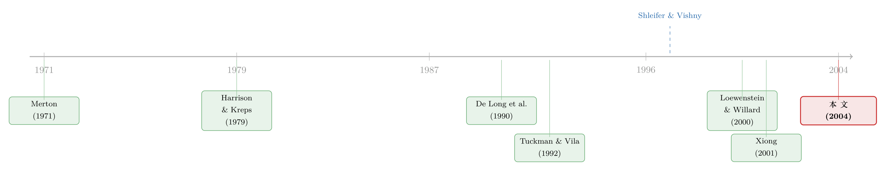

明明是「稳赚」的套利，他却故意只做一半
本文读的是 Liu & Longstaff (2004, Review of Financial Studies)：当一笔教科书式的「无风险套利」必须用抵押品来支撑空头时，它就变成了一笔有风险的投资。作者用一个连续时间模型证明，理性投资者常常会主动少做——不把抵押品允许的头寸做满；而且即便照最优策略来做，套利组合在收敛前也几乎注定要经历浮亏，亏掉超过 75% 都不稀奇。
1 一句让经济学家坐不住的话
先从一句话讲起。论文开篇引了一位华尔街大投行国债交易员的原话：
"So there's an arbitrage. So what? This desk has lost a lot of money on arbitrages. Arbitrages aren't particularly great trades." （「有个套利？那又怎样？我们这张台子在套利上亏了不少钱。套利根本算不上什么好交易。」）
这句话听上去几乎是反智的。金融经济学的地基之一，就是「市场里不存在套利」——理由简单到不能再简单：如果真有一笔稳赚不赔的机会，投资者只要无限加码，就能攫取无限财富，所以这种机会好到不可能是真的，必然瞬间被抹平。一个连本科生都会背的命题，怎么会让一张真金白银的交易台亏到肉痛？
矛盾就摆在这里：理论说套利者会贪婪地无限做多，现实里的套利者却在小心翼翼、甚至亏钱离场。Liu 和 Longstaff 这篇文章，干的就是把这个裂缝撬开、然后一路撬到底。
2 缺的那一环：抵押品
首先，要问的是：理论的推导哪里出了岔子？
「无限财富」这个论证，藏着一个从没被言明的前提——你能一直把头寸持有到收敛。教科书的套利策略是：在两个价格本该相等、却暂时背离的资产上建立反向的多空头寸，然后老老实实持有到它们价格归一，落袋为安。
但接着，一个自然的问题是：持有的过程里会发生什么？现实中，一个空头会凭空造出一笔负债，而负债必须用抵押品 (collateral) 来担保。这不是什么边角细节——论文援引 ISDA 的调查指出，大型金融机构几乎与所有重要对手方都签了抵押协议，74% 的追加保证金要求按日结算，另有 17% 按周结算。换句话说，你的浮亏每天都要被人盯着、被人追着补钱。
于是问题来了。假如建仓之后，套利不但没收窄、反而先走阔了呢？你会先吃到一笔按市值计价的浮亏；如果亏得够狠，抵押品不够补保证金，你就会在它收敛到理论价值之前被强制平仓——在最糟的点位认赔出场。1998 年那场高杠杆对冲基金危机，正是这堂课最昂贵的注脚。
到这里，那位交易员的牢骚就不再反智了：有抵押品约束的世界里，套利是一笔有风险的投资，而不是一台印钞机。 这正是 Shleifer and Vishny (1997)「套利的极限」那篇名作的精神。Liu 和 Longstaff 的贡献，是把这个直觉装进一个能算出最优策略的连续时间模型里。
（关于「捡硬币却可能被压路机碾过」的固定收益套利风险，可参见《捡硬币的人，真的站在压路机前面吗？》；关于套利者数量有限、价差因此能持续存在，可参见《无风险的钱，为什么没人捡？》。）
3 模型：用一座「布朗桥」装下一笔套利
模型本身极简，却恰到好处。市场里只有两样东西。
第一样是无风险资产，价值 \(R_t\)，以常数利率 \(r\) 增长：
$$dR_t = rR_t\,dt,\qquad R_0=1,\qquad R_t=e^{rt}.$$
第二样，是那笔套利机会，价值 \(A_t\)，\(0\le t\le T\)。怎样用一个随机过程刻画「一笔到时点 \(T\) 必然收敛到零」的套利？作者的巧思，是借用一个布朗桥 (Brownian bridge) 过程：
$$dA_t = -\,\frac{a\,A_t}{T-t}\,dt + s\,dZ_t,$$
其中 \(a,s\) 是正常数，\(Z_t\) 是标准布朗运动。直觉在那个漂移项上：当 \(t\to T\)，分母 \(T-t\to 0\)，漂移的均值回复力被无限放大——\(A_t>0\) 时把它往下拽、\(A_t<0\) 时把它往上推，于是 \(A_T\) 以概率 1 收敛到零。参数 \(a\) 决定收敛多快，\(s\) 决定这一路上抖得多厉害。把上面这个 SDE 解出来，可以写出 \(A_s\)（\(t\le s\le T\)）的显式形式：
$$A_s=\left(\frac{T-s}{T-t}\right)^{a}A_t+s\int_t^s\left(\frac{T-s}{T-t}\right)^{a}dZ_t,$$
它是正态分布的，条件均值 \(M_s=\big(\tfrac{T-s}{T-t}\big)^{a}A_t\)，随 \(s\to T\) 收敛到零。
关键的一点：布朗桥让 \(A_t\) 可正可负，而且可以证明 \(|A_t|\) 以正概率超过任意给定值。也就是说，无论现在赚得多舒服，套利永远有继续走阔的风险。正是这个性质，使得这个市场不存在等价鞅测度——它在数学上同时也是「套利存在」的另一种说法。
4 财富怎么动：一个被放大的收敛力，和一份甩不掉的风险
设投资者持有 \(N_t\) 单位套利、\(P_t\) 单位无风险资产，总财富
$$W_t=N_tA_t+P_tR_t.$$
在自融资 (self-financing) 假设下，把 \(dA_t\) 代入并整理，财富的动态就是整个模型的心脏：
读懂这个方程，全文就读懂了一半。第二项里那个 \(a/(T-t)\) 告诉你：离到期越近，收敛的「拉力」越强，期望收益越诱人；但第三项 \(sN_t\,dZ_t\) 同时提醒你，头寸 \(N_t\) 放得越大，你要承受的波动也越大——而这波动可能在收敛之前就把你掀翻。收益和风险被同一个 \(N_t\) 死死绑在一起。
接着是抵押品约束。投资者每持有一单位套利，就要按负债额外再压上 \(\lambda\) 的保证金（\(\lambda\ge 0\) 是每单位的「折扣率」haircut）：
$$P_tR_t\ge |N_tA_t|+\lambda|N_t|.$$
在最优策略满足 \(N_tA_t\le 0\) 的前提下（后面会验证），它可以化简成一条干净利落的财富约束：
$$W_t\ge \lambda|N_t|.$$
5 解出最优策略：为什么是「内点」，而不是「做满」
现在来真正关键的一步。投资者要最大化终端财富对数效用 \(E_t[\ln W_T]\)。因为问题对财富齐次，可证最优头寸必形如 \(N_t=F_tW_t\)，\(F_t\) 只依赖 \(A_t\) 和 \(t\)。把 \(W_T\) 的表达式代入，求导子效用函数写成
$$J(W,A,t)=\ln W_t+\max_{F}\;E_t\!\int_t^T\!\Big[r-\Big(r+\tfrac{a}{T-s}\Big)FA-\tfrac{s^2}{2}F^2\Big]ds.$$
注意积分里是一个关于 \(F\) 的二次式，而且 \(A\) 的动态跟 \(F\) 无关。于是最优化可以逐状态地完成——对每个时点、每个 \(A\) 值，单独求一个一元二次的极值。令被积函数对 \(F\) 的导数为零：
$$-\Big(r+\tfrac{a}{T-s}\Big)A - s^2F = 0 \;\Longrightarrow\; F^\*=-\frac{r+\tfrac{a}{T-s}}{s^2}\,A.$$
这就给出了无约束时的内点解 \(N_t=-\dfrac{r+\tfrac{a}{T-t}}{s^2}A_tW_t\)。两件事立刻浮现：
其一，\(F^\*\) 与 \(A\) 反号——所以投资者永远站在套利的对立面（\(A>0\) 就做空、\(A<0\) 就做多），建仓那一刻就拿到一笔正现金流。这验证了前面 \(N_tA_t\le 0\) 的猜测。
其二，也是全文最反直觉的地方：这个内点解是一个有限的、随 \(|A|\) 线性变化的小头寸，而不是「能做多大做多大」。原因正是那个二次的风险惩罚 \(-\tfrac{s^2}{2}F^2\)——对数投资者在收敛漂移和波动风险之间权衡，自然落在一个内点上。再叠加抵押品上限 \(|N_t|\le W_t/\lambda\)，就得到了论文的核心命题。
命题 1（最优套利头寸）。 记临界值 \(A^\dagger=\dfrac{s^2}{\lambda\big(r+\frac{a}{T-t}\big)}\)，则
$$ N_t= \begin{cases} \dfrac{1}{\lambda}\,W_t, & A_t<-A^\dagger,\\[2.2ex] -\dfrac{r+\frac{a}{T-t}}{s^2}\,A_tW_t, & |A_t|\le A^\dagger,\\[2.2ex] -\dfrac{1}{\lambda}\,W_t, & A_t>A^\dagger. \end{cases} $$
于是反转出现了。当 \(|A_t|\) 落在中间区间 \(-A^\dagger< A_t< A^\dagger\) 里时，最优头寸的绝对值小于抵押品允许的最大单位数；尤其当 \(A_t\) 接近零时，最优 \(N_t\) 可能只是上限的一个零头。也就是说——
套利机会越「干净」（\(|A_t|\) 越接近零、价差越小），投资者反而越应该少做。这与「看到套利就要顶格做满」的流行观念正好相反。只有当价差已经走阔到足够极端（\(|A_t|>A^\dagger\)）、收敛的期望收益足够诱人时，他才会顶到抵押品约束、把头寸做满。
6 \(\lambda\) 这个开关：把无限效用关回有限
那么，抵押品到底「关掉」了什么？把 \(\lambda=0\) 代回去看：约束消失，最优策略退化为纯内点解
$$N_t=-\frac{r+\frac{a}{T-t}}{s^2}\,A_tW_t,$$
此时可证 \(E_t[\ln W_T]=\infty\)——这正是教科书里「无限财富」的那个结论，对应着没有保证金的理想世界。而只要 \(\lambda>0\)，头寸被 \(W_t/\lambda\) 封顶，子效用函数 \(J\) 就变成有限值。一个看似微不足道的保证金折扣，从根本上改写了套利的经济学：它把一台理论印钞机，变成了一笔有限收益、有真实风险的生意。这也解释了为什么 Treasury 的 haircut 只有每百元 $1–$2、而公司债高达 $10–$20 时，后者的套利会被压缩得厉害得多。
7 主要结果：最优策略下，浮亏几乎是「胎记」
模型解完，作者用模拟去看：照最优策略来做，套利组合到底长什么样？结论同样不留情面。
- 即便完全照最优策略执行，组合在收敛日之前也会经历大幅浮亏——某些情形下，亏损能超过组合价值的
75%。 - 早期阶段的收益分布强烈左偏（skewed toward negative），套利组合在生命周期中的某个时点，通常会跌破其初始价值。
- 极端情况下，投资者甚至可能在收敛日仍是亏的——这时他还不如一开始就老老实实买无风险资产。
- 而代价换来的回报并不耀眼：数值例子里，套利的夏普比率 (Sharpe ratio) 一般也就平均在 2 左右。
把这些拼起来，作者给出一个犀利的论断：在套利早期经历巨亏，几乎是最优策略的「胎记」。于是 1998 年危机的真问题，也许不是对冲基金「杠杆太高」或「在投机」，而是太多市场参与者对套利该有的表现抱了不切实际的期待。更深一层：既然理性投资者可能选择只做很小的头寸、甚至干脆不碰某笔套利，那就没有任何力量保证价差一定会被抹平——套利完全可以长期存在，甚至越走越宽。许多建立在「无套利」之上的估值论证，恐怕都需要重新审视。
8 文献脉络
把这条线索捋一捋。源头有两支：一支是 Merton (1971) 开创的连续时间动态组合选择；另一支是 Harrison and Kreps (1979)、Harrison and Pliska (1981) 奠定的无套利定价基石——它们论证了为约束交易策略以排除「翻倍策略」式的虚假套利的必要性。
接着，一个自然的反问是：如果市场有摩擦，套利还能不能存在？De Long et al. (1990) 的噪声交易者风险、Tuckman and Vila (1992) 把持有成本写进效用、Shleifer and Vishny (1997) 的「套利的极限」，一步步把「套利是有风险的」这件事讲清楚。再往后，Basak and Croitoru (2000) 与 Loewenstein and Willard (2000a–c) 证明，在有约束的一般均衡里，错误定价可以被持续维持；Xiong (2001) 则刻画了带财富效应的收敛交易如何放大市场波动。

但真正关键的一步在于：在 Basak and Croitoru 的模型里，套利者总是顶格做满约束允许的最大头寸；而 Loewenstein and Willard 并没有刻画套利者的最优组合策略。Liu 和 Longstaff 恰好补上了这一块——当把「抵押品」这个真实世界的特征引进来，套利变得有风险，而理性的人会主动选择少做，其收益甚至可能与一个「业绩平平、节节走低」的传统组合观测上无法区分。这是这篇文章在脉络里的位置。
9 评论与延伸（Q&A + 研究方向）
(a) 几个可能的疑问
Q：抵押品约束，跟卖空限制、交易成本不是一回事吗？
不是，作者特意作了区分。最优策略下套利头寸的权重可以取任意负值（\(N_tA_t/W_t\) 无上界），所以它不是卖空限制；投资者拿到的抵押品照样收取利息与增值，没有直接经济损失，所以也不是交易成本。抵押品约束真正约束的，是你在浮亏时能不能扛住、不被强平。
Q：为什么用「布朗桥」而不是普通的均值回复（OU）过程？
因为套利的本质是「到某个确定的未来时点 \(T\) 必然收敛到零」。布朗桥靠 \(a/(T-t)\) 这个随时间发散的漂移，保证 \(A_T=0\) 以概率 1 成立；普通 OU 过程只能让它在期望意义上回到零，做不到「到期必平」。代价是这个过程不存在等价鞅测度——但这恰恰是「套利存在」该有的数学特征。
Q：「少做」这个结论会不会只是对数效用的特例？
对数效用让推导干净到能写出闭式解，这是它被选中的原因。但「少做」的根源是收益与风险被同一个 \(N_t\) 绑定、再叠加二次的风险惩罚——这是更一般的力量。作者也指出，把 haircut 设成 \(|A_t|\) 的增函数（更贴近现实）时，类似的「欠投资」结论依然成立。
Q：夏普比率「只有 2 左右」，听起来不是已经很高了吗？
在它最终收敛的语境下，2 确实不算惊艳——你承受了可能亏掉七成、甚至到期还亏的左偏风险，换来的风险调整后回报却平平。论文的潜台词是：用「夏普比率」这把尺子去衡量套利，本身就低估了它早期的尾部痛苦。
Q：模型说套利可以长期存在，这跟「市场有效」冲突吗？
它质疑的是「无套利」这个论证方式，而不是市场有效本身。既然理性投资者可能只做很小头寸、甚至不参与，价差就缺乏被自动抹平的力量。这给「基于无套利的估值论证」打了个问号，与《同一现金流，两个价格：当央行亲手掰断了套利这根杠杆》讨论的现实裂缝是同一脉络。
Q：模型里没有违约、没有破产，会不会把风险讲轻了？
自融资假设确实排除了中途注资、信用支持与救助——作者承认这一点，但论证说初始财富可以定义为已包含这些或有现金流的价值，因而损失一般性不大。真正的破产/违约动态，是留给后人的题目。
(b) 几个可能的研究问题与提案
1. 把模型搬到公司债的「同发行人」价差上做实证。
【经济故事】同一发行人的两只现金流几乎相同的债券，价差就是一个天然的 \(A_t\)；公司债 haircut 远高于国债（$10–$20 vs $1–$2），「欠投资」效应应当更强。
【可行性】中。需要 TRACE 逐笔成交价 + 债券特征数据来构造价差与流动性，识别上可借不同 haircut 制度（回购市场）作横截面对比。难点是抵押品折扣的逐券测量。
2. 外资套利者的抵押品约束是否更紧？ 【经济故事】跨境套利者面临货币错配、托管与本地抵押品获取的额外摩擦，理论上其最优头寸应被压得更小，从而对某些价差的「修复速度」贡献更低。 【可行性】中。可用新兴市场或在岸/离岸债券价差，结合投资者国别持仓数据；识别可利用资本管制或抵押品资格规则的外生变动。
3. 把 haircut 当成可定价的状态变量，做「套利组合」的资产定价。 【经济故事】既然 \(\lambda\) 决定了套利的可行规模与风险，haircut 的时变（尤其危机期跳升）本身就该是一个风险因子。 【可行性】中偏低。需要回购/保证金 haircut 的时间序列（数据稀缺、机构私有），识别靠危机事件窗口。诚实地说，数据可得性是主要瓶颈。
4. 「最优套利组合长得像业绩走低的传统组合」——能否反向用来甄别基金？ 【经济故事】论文指出二者观测上不可区分。那么单看净值曲线，我们其实无法判断一只对冲基金是在做真套利还是在乱亏钱。 【可行性】高（作为方法论文）。可用模拟生成两类净值路径，检验常用业绩指标（夏普、最大回撤、alpha）能否区分，给「业绩归因」敲一记警钟。
10 我的判断
这篇文章的贡献，在于把一句交易员的牢骚，翻译成了一个能算的命题：抵押品约束足以让一笔无风险套利变成有风险投资，而最优的回应是克制，不是贪婪。 \(\lambda=0\) 给无限效用、\(\lambda>0\) 给有限效用这个对照，干净得近乎优雅——一个被所有无套利论证忽略的真实摩擦，竟是决定套利「能不能被做满」的总开关。
对识别（这里更该说「对模型说服力」）的担忧有三点。其一，结论的量级——「亏掉 75%」「夏普约 2」——高度依赖布朗桥的参数 \(a,s\)，而论文自己也承认，关于套利动态的经验证据「少得可怜」，这些数字更像是合理参数下的演示，而非对现实的标定。其二，对数效用与自融资假设排除了破产、追加资本与传染，而 1998 年真正致命的恰恰是这些动态，模型对「危机」的刻画因此偏温和。其三，单一套利、单一布朗桥的设定，回避了多笔套利之间的相关性与组合层面的强平螺旋——而那往往才是系统性风险的来源。
后续最想看到的，是把这套逻辑标定到真实价差上：用同发行人公司债或回购市场的 haircut 数据，去估 \(a\)、\(s\) 和 \(\lambda\)，看模型预测的「欠投资」幅度与套利者的实际持仓对不对得上。如果对得上，那么「套利能持续存在」就不只是一个理论可能，而是一个可测量的市场常态。
参考文献
- Basak, S., and B. Croitoru (2000). Equilibrium Mispricing in a Capital Market with Portfolio Constraints. Review of Financial Studies 13(3), 715–748.
- De Long, J. B., A. Shleifer, L. Summers, and R. Waldmann (1990). Noise Trader Risk in Financial Markets. Journal of Political Economy 98(4), 703–738.
- Harrison, J. M., and D. M. Kreps (1979). Martingales and Arbitrage in Multiperiod Securities Markets. Journal of Economic Theory 20(3), 381–408.
- Harrison, J. M., and S. Pliska (1981). Martingales and Arbitrage in Multiperiod Securities Markets. Stochastic Processes and Their Applications 11(3), 215–260.
- Liu, J., and F. A. Longstaff (2004). Losing Money on Arbitrage: Optimal Dynamic Portfolio Choice in Markets with Arbitrage Opportunities. Review of Financial Studies 17(3), 611–641.
- Loewenstein, M., and G. Willard (2000). Local Martingales, Arbitrage, and Viability: Free Snacks and Cheap Thrills. Economic Theory 16(1), 135–161.
- Merton, R. (1971). Optimum Consumption and Portfolio Rules in a Continuous Time Model. Journal of Economic Theory 3(4), 373–413.
- Shleifer, A., and R. W. Vishny (1997). The Limits of Arbitrage. Journal of Finance 52(1), 35–55.
- Tuckman, B., and J. L. Vila (1992). Arbitrage with Holding Costs: A Utility-Based Approach. Journal of Finance 47(4), 1283–1302.
- Xiong, W. (2001). Convergence Trading with Wealth Effects: An Amplification Mechanism in Financial Markets. Journal of Financial Economics 62(2), 247–292.